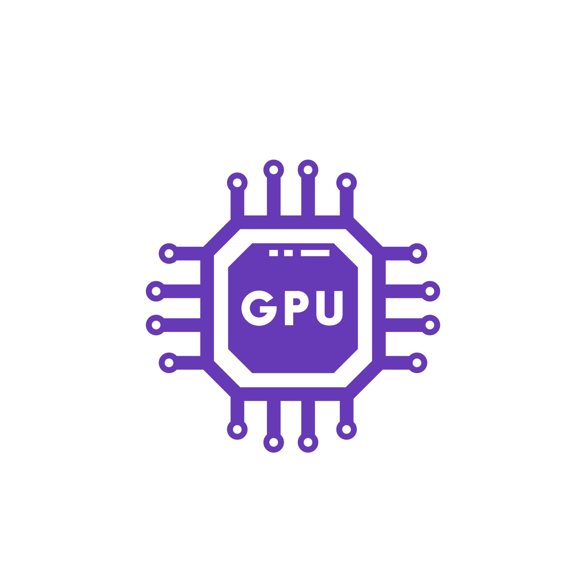

Op deze pagina kunt u al mijn skills bekijken. Van talen tot methodes tot programma's. als ik het kan en het met software development te maken heeft dat staat het hier!
Ik heb veel gewerk met HTML. Het maken van Websites is 1 van mijn passies en ik vind het leuk om te kijken wat ik er mee kan.
Bij het maken van websites komt ook styling kijken. Dit kan ik onderandere met CSS. Ik ben geen pro maar de basis ben ik meester.
Met JavaScript kunnen we websites interactief maken. Dit is erg belangrijk en dus heb ik dit geleerd op school.
Doormiddel van php kan ik websites interactief maken en gebruik maken van een database (samen met SQL) om zo data op te slaan en terug te geven.
Python is een handige taal om te kunnen. Daarom heb ik dit geleerd op school. Ik kan er CMD games en functies mee maken en kan er dingen mee aansturen.
Scrum is een handige methode voor het werken in groepsverband. Ik weet hoe scrum werkt en kan er mee werken zodat een project goed zal verlopen.
Ik kan werken met GitHub zodat groepsprojecten goed verlopen. Het gebruiken van de interne scrum, het pushen en pullen van codes kan ik allemaal.
Om te progammeren is het handig om software te hebben waar dat in kan. Ik werk zelf altijd met VScode. Ik weet hoe deze software werkt en wat ik er allemaal me kan.
Ik kan werken met SQL en zo een database maken, connecten, data er in stoppen en er uit halen. Op deze manier kan ik (samen met php) een interactieve website maken.
Ik ben in staat om met DE micro computter van deze tijd te werken, de microbit. Ik kan de microbit en zijn extenties programmeren of waardes te maten weer te geven en veel meer.
Ik ben in staat om te werken met Hyper-V. Ik kan virtual machines installeren zodat ik daar projecten op zou kunnen draaien die alleen werken op serverside.
Ik ben in staat om met behulp van Tailwind CSS een website te stylen en in te delen. Zo heb ik bijvoorbeeld mijn deze portfoliowebsite gemaakt met Tailwind.
Ik heb op school ook geleerd hoe ik werk met ubuntu. Het installeren van ubunten, de setup voltooien en basis activiteiten kan ik in ubuntu om bijvoorbeeld een project te draaien.
Ik heb gewerkt met arduino's die worden aangestuurt in de programmeer taal C++. hoewel dit niet mijn beste taal is kan ik de basis vaardigheden uitvoeren.
Als je programmeren zegt, zeg je scratch. Het begin van elke programmeur. En dus ook voor mij. In scratch heb ik games gemaakt en kan ik er apparaten zoals de microbit mee aansturen.

Naast software kan ik ook goed overweg met hardware. Ik ben in staat om een computter in elkaar te zetten en volledig werkend te krijgen. Ook kan ik extentie koppelen en setupen.